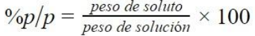

La concentración química determina la proporción de soluto y solvente en una solución química. La concentración química es la cantidad en que se encuentran las sustancias que se disuelven (soluto) en relación a la o las sustancias que lo disuelven (solvente). En este sentido, la cantidad de soluto siempre será menor al solvente para que se considere una solución. La preparación de una solución química requiere de calcular las medidas de soluto y solvente que determinará la concentración de la solución y el tipo de solución. Las concentraciones de las soluciones se expresan por molaridad, molalidad o fracción molar
¿Qué es Solución química?
Una solución química es la mezcla homogénea de una o más sustancias disueltas en otra sustancia en mayor proporción. Una solución química es compuesta por soluto y solvente. El soluto es la sustancia que se disuelve y el solvente la que lo disuelve. Las soluciones químicas pueden presentar los tres estados de la materia: líquida, física y gaseosa. A su vez, sus solutos y sus solventes también pueden presentar esos tres estados. La mezcla del alcohol en el agua, por ejemplo, es una solución líquida de soluto y solvente líquido. El aire está compuesto de nitrógeno, oxígeno y otros gases, resultando en una mezcla gaseosa. Por otra parte, las amalgamas de un soluto sólido como el oro con un solvente líquido como el mercurio da una solución sólida.
Concentración de soluciones químicas
La concentración química determinará en unidades físicas de peso, volumen o partes por millón (ppm) el porcentaje que el soluto presenta en la solución. La concentración de soluciones se expresa a través de su molaridad (mol/lt), molalidad (mol/kg) y fracción molar (mol/mol). El conocimiento de la concentración en una solución química es importante, ya que, determinará la cantidad de soluto y solvente presentes para determinar los factores de cambio y recrear la solución para su uso o estudio posterior.
Medidas de concentración química
Las medidas de concentración de soluciones químicas son determinadas por unidades físicas y unidades químicas de concentración: Las unidades físicas son aquellas que definen la proporción entre el soluto y el solvente en masa, volumen o sus partes. Las unidades químicas, por otro lado, definen la concentración de la solución por moles o equivalentes químicos que presenta el solvente.
Unidades químicas de concentración de soluciones
Las unidades químicas de concentración de soluciones calculan la cantidad de moles o de equivalentes químicos de un soluto en un solvente. Las medidas químicas de concentración y sus respectivas fórmulas son:
Molaridad (g/L): La molaridad es el número de moles de soluto en litros de disolución. Un mol es una cantidad de átomos de carbono expresado en la constante de Avogadro. Para determinar el número de moles o masa molar de un elemento basta consultar una tabla periódica. El número que se encuentra debajo del símbolo químico del elemento y también es conocida como masa atómica.
Molalidad: Para la preparación de soluciones de concentraciones de una cantidad determinada de molalidad se utiliza la siguiente fórmula:
Para el cálculo de moles de un soluto se busca la masa atómica o masa molar que se encuentra debajo de cada elemento químico de la tabla periódica.
Normalidad (N): La normalidad es el número de equivalentes químicos (EQ) en un gramo de soluto contenidos en un litro de solución. Los equivalentes químicos es a cantidad de sustancia que reacciona para producir un mol de producto. La normalidad también es conocida como concentración normal y se calcula usando la siguiente fórmula:
Para calcular el equivalente químico (EQ) de un soluto se debe tener en cuenta si el soluto es un ácido o un hidróxido (OH) y el uso de las siguientes fórmulas según el soluto que corresponda:
Unidades físicas de concentración de soluciones
Las unidades físicas de concentración de soluciones expresan la proporción de soluto en peso, volumen o partes en relación a la cantidad de solvente. Los ejercicios para calcular el porcentaje en masa o peso, o sea, su concentración expresada en esas medidas, se divide las medidas de soluto por el solvente para luego multiplicar por 100. Las medidas físicas de las concentraciones químicas y sus fórmulas son las siguientes:
Peso sobre peso: Peso sobre peso (%p/p), o también masa sobre masa (m/m) expresa el porcentaje de peso o masa de soluto en relación al peso o masa de solución:

Volumen sobre volumen: Volumen por volumen (%v/v) indica la proporción del volumen del soluto en el volumen total de la solución:
Peso sobre volumen: Peso sobre volumen (%p/v) representa el peso del soluto en relación al
volumen de la solución:
Partes por millón: Partes por millón (ppm) calcula los miligramos de soluto en kilogramos de solución: